엑스데스성
올라가다보면 길이 없어서 돌아가려 하는데, 쿠루루가 이것은 환상이라고 하고, 케루가는 자신의 마지막 생명을 바쳐 힘을 보내어 환상을 깨고 엑스데스성 본래의 모습을 드러냅니다. 이제 길이 생기니까 죽 올라갑시다. 아이템 상자들 잘 챙기시고..
이 곳의 적들 중 리플렉트메이지는 리플렉트링을 가지고 있으며 훔치기 쉽습니다. 이것을 증식해서 밖에 갖고나가 팔면 한번에 백만길에 가까운 돈을 얻을 수 있으니 제2세계에서 돈 벌기에 가장 좋은 방법입니다. 암흑마도사란 녀석은 잡으면 어쩌다가 힘의 지팡이라는 귀중품을 주고(존재 이유가 상당히 애매한 아이템입니다만), 훔치면 거의 포이즌로드가 나오나 적은 확률로 심판의 지팡이가 나오는데 이것은 FF5 최강의 지팡이입니다. (리턴을 하면 들고 나오는 아이템이 바뀌니까 더 쉽게 얻을 수 있습니다.)
용암지대를 지나갈 때는 풍수사의 데미지방지 어빌리티나 레비테트로 피해를 입지 않도록 하시고.. 룰렛이 몇 개 나오는데 잘 통과하세요. 세이브존 후 9층 근처에서 나오는 레드드래곤을 조종해서 레벨3프레아를 배웁시다. 또 가다보면 나오는 세이브존을 지나가면 큰 방에 상자가 하나 있는데 텅 비었고.. 가려고 하면 길가메슈가 나타납니다.
이 녀석 이번엔 중간에 변신을 합니다. 변신 후에 훔쳐야 겐지의 투구를 얻습니다. 좀 싸우다 보면 완전 코미디를 합니다. 전설의 명검 엑스칼리버의 위력을 보여주겠다는데 데미지가 1.. (엑스칼리버의 짝퉁 엑스칼리퍼입니다.) 그 꼴을 보고 엑스데스가 한심했는지 길가메슈를 무로 날려버립니다.
성 상층 어딘가에 카방클이 보이는데, 가는 길이 찾기 어렵습니다. 해골 발판 중 가장 위에 것에 올라서서 워프되면 접근할 수 있습니다. 마법공격은 당연히 무리이고, 지형공격과 마법검을 잘 활용하세요. 모드체인지 후에 카토블레파스를 소환하면 다소 낮은 확률로 석화되니 시도해 보는 것도 좋은 방법입니다.
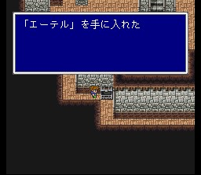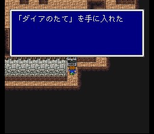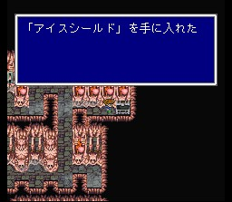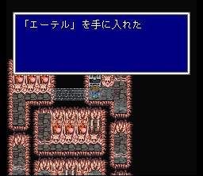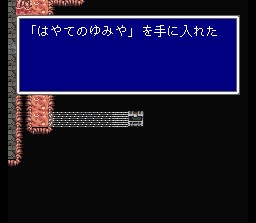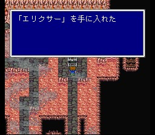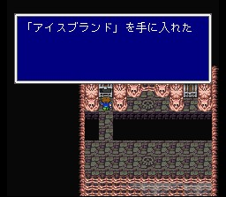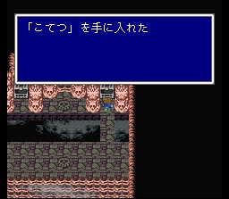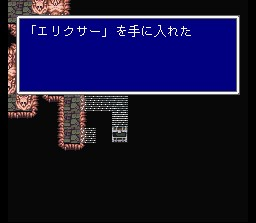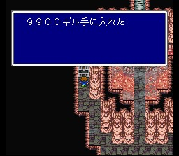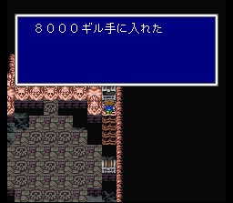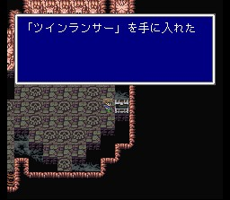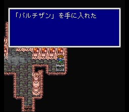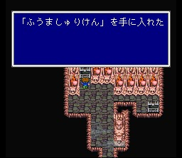
최상층에서 엑스데스가 기다립니다. 전투 개시시 죽음의 선고를 사용하니 배워둡시다. 고렘과 카방클로 방어막을 치시고 화이트윈드로 회복하면서 신나게 두들기세요. 레벨이 66이니 레벨3프레아가 좋습니다. 이것이 가라프의 한이다! 원더원드를 가지고 있으니 훔쳐 보는 것도 좋겠습니다. 제법 쓸 만한 로드입니다.
전투가 끝나면 크리스탈이 깨어지고.. 이제부터 제3세계입니다.